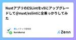
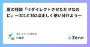
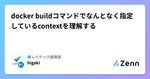
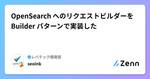
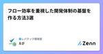
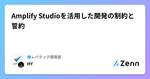
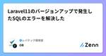

レバテック開発部のフィード
https://zenn.dev/p/levtech
レバテック開発部の公式テックブログです！
フィード

NuxtアプリのESLintをv9にアップグレードして@nuxt/eslintに全乗っかりしてみた 1
1
レバテック開発部のフィード
おつかれさまです。オウンドメディア担当の水谷です。自チームで管理しているフロントエンドアプリ（Nuxtベース）に導入しているESLintをv9にアップグレードするとともに@nuxt/eslintを導入したのでその紹介です。 TL;DR Before.eslintrc.js.eslintrc.jsmodule.exports = { root: true, env: { browser: true, node: true, es2021: true }, parser: "vue-eslint-...
12時間前

夏の怪談「リダイレクトさせただけなのに」〜301と302は正しく使い分けよう〜 1
レバテック開発部のフィード
はじめにすでに夏バテしています、レバテック開発部のかないです。梅雨も明けて夏本番なので、夏恒例の怖い話をして涼しくしたいなと思う所存です。テーマは、「メンテナンスページにリダイレクトさせただけなのに」です。 どうやってメンテナンス状態を実現したかメンテナンスの方針はいくつか選択肢がありましたWAFを使ってメンテナンスページを表示するフロントエンドのミドルウェアでメンテナンスページにリダイレクトさせる処理を入れるALBのリスナールールでメンテナンスページにリダイレクトさせるルールを追加するその中で、ALBを使ったリダイレクト設定は、別件（古いページを新しいページ...
3日前

docker buildコマンドでなんとなく指定しているcontextを理解する 1
レバテック開発部のフィード
背景みなさんも「dockerのbuild contextについて説明してクレメンス」と突然聞かれることありますよね。僕は、もう疲れちゃって 全然わからなくてェ...調べてみたのでまとめておきます。 結論dockerのbuild contextとは、「dockerのbuild時にアクセスできるファイル群」です。そのファイル群の実態は、「アーカイブファイルやテキストファイル」となっています。これだけ聞いても、はて？？って感じだと思うので、公式サイトを参考に説明追加していきます。!今回の記事では以下を説明対象にします。contextの種類アーカイブファイルに絞り...
5日前

OpenSearch へのリクエストビルダーを Builder パターンで実装した
レバテック開発部のフィード
はじめにレバテック開発部の瀬尾です。OpenSearch への検索を担うシステムの運用保守をしています。今回は、Search API へのリクエストで、そのシステムがこれまで対応していなかった Aggregations（集計）に追加対応させるにあたり、既存のリクエスト生成処理を Builder パターンでの実装に変更しました。大したことはしていないのですが、スッキリ実装になってよかったので記事にしてみます。 背景レバテックには案件検索ページがあります。「案件」とは、サービス利用者のITフリーランスの方々が契約するためのものです。このページの検索は、案件データを格納し...
8日前

フロー効率を重視した開発体制の基盤を作る方法3選 1
レバテック開発部のフィード
TL;DR1PBI=1価値レビュー最優先WIP制限まずはこの3つを浸透させることでフロー効率重視の開発基盤を作る！ はじめにレバテックの多くのチームではスクラムに取り組んでいます。スクラムでは継続的な価値提供が重視され、そのためにはリソース効率よりもフロー効率を優先して日々の業務に取り組むことが必要となります。今回は、自チームの価値提供速度を高めるために実施したことをまとめようと思います。 フロー効率とはソフトウェア開発において、人の稼働率を重視することがリソース効率重視、稼働率よりも1つ1つのタスクに着目してそのタスクが得るリソースの時間を重視することが...
9日前

Amplify Studioを活用した開発の制約と誓約 1
レバテック開発部のフィード
はじめにレバテックでオウンドメディアの開発を担当している本名です。今回はAWS Amplify Studioを活用したフロントエンド開発を通して感じた制約と誓約についてお話しできればと思います。※弊社がAmplify Studioを採用した背景は以下に載っていますので、ぜひご覧ください。https://speakerdeck.com/leveragestech/aws-amplify-studioto-figmanolian-xi-niyorulpkai-fa-noxiao-lu-hua 話すこと開発を通じて感じた下記4つについて話します。Figmaデザインの制約...
10日前

Laravel11のバージョンアップで発生したSQLのエラーを解決した
レバテック開発部のフィード
はじめにLaravel10で動作している基幹システムをLaravel11にバージョンアップしました！その際下記のようなエラーが発生したので調査して解決したのでなせ発生したのか纏めてみようと思いますlocal.ERROR: SQLSTATE[42S21]: Column already exists: 1060 Duplicate column name 'id'以前に業務委託の方に対応してもらったシステムと同じで、大規模なバージョンアップとならないように、定期的なメンテナンスを意識するようになりましたhttps://zenn.dev/levtech/articles/58a...
11日前

Amazon RDS から TiDB 移行時のしくじり集
レバテック開発部のフィード
はじめに先日、レバテックで最も歴史のあるDBでかつ最も容量が大きいDBをTiDBに移行しました！https://x.com/_syoryu89/status/1815969309526528119Xの投稿でもある通り、無事だったかというとそうではないので、その理由をまとめたいと思います！!レバテックで最も歴史のあるDBだけあってツッコミどころはたくさんあると思いますが、そこは許してくださいw 前提条件移行元DBAmazon RDSエンジン：MySQL Communityエンジンバージョン：8.0.33グローバルシステム変数（影響があった部分をピック...
15日前
チームの混乱期を乗り越えるために『ダイアローグ』を導入しようとしたら失敗した話
レバテック開発部のフィード
これはなにども、レバテック開発部のもりたです。もりたはこの４月から新しいチームに配属になっています。折しもチームは再編成の時期であり、コミュニケーション改善・チームビルディングについて取り組むことも多くなってきました。今回はもりたのトライした取り組みの内容について、企画から提案、そして反省会までを記事にしました。この活動自体は最終的に取りやめになっていますが、ひとつの区切り/ログとして残します。書くこと書かないこと書くことどんなチームでなぜコミュニケーションを課題に挙げて、そこに対してどんな対策を考え、どうやって実施していくか心理的安全性の獲得をゴールに取り組みを...
17日前
AWS RDS/Auroraでモニタリング＆チューニングを始めるための資料11選
レバテック開発部のフィード
これはなにども、レバテック開発部のもりたです。もりたはデータベースが好きなんですが、最近は特にAWS RDS/Auroraでのモニタリングとパフォーマンスチューニングについて興味があります。ただ、これらのうちモニタリングは扱っている話題が若干ローレベルであまりピンとこず、またチューニングもどこから手をつければいいのかわかりませんでした。この記事では、もりたがモニタリング＆チューニングを学習する上で役に立った書籍やWeb上の資料をロードマップ形式で紹介していきます。対象読者はDBのモニタリングとチューニングをやりたいけどどこから手をつければいいか分かんないなとなっている人、ゴール...
22日前
経営層を、開発者体験向上にコミットさせる方法論
レバテック開発部のフィード
これは「Developer eXperience Day 2024」のLightningTalk枠での登壇内容について、口頭で話したことを補足しつつ、その他話せなかったこと含めてドキュメントにまとめたものです。余談ですがDXD2024は初日のトラックレコードさんとログラスさんのワークショップがイチオシでした。DXD参加の皆様、運営の皆様、お疲れ様でした。来年も楽しみです。 TL;DRコミットできる経営層を巻き込み、開発組織に信頼を輸入するとよいWho：巻き込む狙い目→「目標の時間軸が長い人」How：①知識 + ②可視化 + ③追体験 = コミット 自己紹介レバ...
23日前
PlatformEngineering Kaigi 2024に参加&登壇してきました
レバテック開発部のフィード
お疲れ様です。レバテック開発部 基盤システムグループの小堺です。先日、PlatformEngineering Kaigi 2024に参加&登壇してきたので、イベントの紹介や登壇した感想などをゆるくお伝えしようと思います！ どんなイベント？PlatformEngineering Kaigiは、日本初のPlatform Engineeringのカンファレンスで、今回が記念すべき第1回でした。チームトポロジー著者のManuel Pais氏が登壇したり、他にも多くの有名企業が参加するなど注目度の高さが伺えました。https://www.cnia.io/pek2024/...
25日前
OAuthの仕組みを説明してHonoで実装してみる
レバテック開発部のフィード
はじめにはじめまして！レバテック開発部でレバテックプラットフォーム開発チームに所属している塚原です。直近に認証・認可周りの改修を予定しているため、チーム内で認証・認可の基礎からOAuth・OpenID Connectの仕組みを学ぶ勉強会を実施しました。今回はそこで学んだことのうち、認証・認可の基礎とOAuthの仕組みをまとめます。また、WebフレームワークとしてHono、JavaScriptランタイムとしてBunを使って、OAuthクライアントを実装してみます。 対象読者認証と認可の違いってなんだっけ...?という人Basic認証やDigest認証てなんだっけ...?と...
25日前
バーティカルグリッドを活用したタイポシステムを構築した話
レバテック開発部のフィード
はじめにはじめまして！レバテックでサービスサイトのデザイン制作とディレクション業務を行っている青木です。現在は日々の制作業務に加え、デザインシステム『VoLT』の構築と運用に取り組んでいます。『VoLT』は既に現場で利用されていますが、リリース後は現場の課題感に合わせてアップデートを行なっています。本記事では、『VoLT』で定義されているテキストスタイルとグリッドシステムの再定義の話を中心に、抱えていた課題に「バーティカルリズム」という概念を取り入れて解決した事例について紹介します。また、デザインシステム構築の背景や目的が書かれた記事も公開されているので、気になる方はぜひ...
1ヶ月前
【入社エントリ】中途で入社して１ヶ月が経ち、見えてきた会社のGoodな部分をまとめてみる
レバテック開発部のフィード
はじめにこんにちは！6月にレバテック開発部に中途で入社した宮下です。まだ入社をして1ヶ月も経っていませんが、新参者だからこそクリアに見える会社のGoodな部分をあげていきたいな〜と思います🌟良いところも悪いところも、長く居ると慣れて当たり前になってしまうので、当たり前になる前にアウトプットします。 1️⃣ 人との繋がり人との繋がりが強いな！って思ってます。この要素がGoodになるかどうかは人によりますが、私にとってはGoodでした。人との繋がりって何やねんって感じですけど、"コミュニケーションの量と範囲"と捉えてもらえたらいいと思います。具体的には以下の3つが大き...
1ヶ月前
タスク優先度の意思決定を楽にするために、選択と集中してみた
レバテック開発部のフィード
はじめにどうも、レバテックでCREを進めている住村です。レバテック開発部では社内でテックブログ執筆を促進するためのキャンペーンをやってまして、前回の記事がなんと社内のテックブログ執筆のキャンペーンで賞品をいただけました！https://zenn.dev/levtech/articles/aa35d3687b6876賞の連絡をくれた編集長が「何でもいいよ！」と言ってくれたので、遠慮なく犬用の服を選ばさせていただきましたが、それで実際買ってくれたので凄いですね。賞品を着た愛犬。この数分後に芝生で転げ回り、早々に汚しました今回の記事では、前々回の記事で少し触れた、業務の選択と...
1ヶ月前
システムで扱うステータスの分解と変換
レバテック開発部のフィード
初めにレバテック開発部の今井です。ソフトウェア開発において、データの状態管理は非常に重要です。注文の状態、ユーザーの認証状態、プロジェクトの進行状態など、多岐にわたる状況で、適切な状態管理が求められます。しかし、ビジネス要件の変化や新機能の追加に伴い、状態管理が複雑化し、保守が難しくなることがあります。この記事では、データの状態管理を簡単にするためにMECEを初めとした方法で分析を提案します。これによって、柔軟で効率的なシステム設計が可能になることを目指します。 TL;DRMECEの原則を使ってenum型ステータスを分解する方法を解説するMECEによる分解から一次情報...
1ヶ月前
レバテック、Autify始めます！！〜 Autify大臣の事始め 〜
レバテック開発部のフィード
はじめにレバテック開発部の江間です。この度、私が所属しているレバテック開発部にE2Eテスト自動化SaaSのAutifyを導入しました。4月中旬より利用を開始して『Autify大臣』なるものをやらせていただき、導入推進を始めて2ヶ月ほど経過しました。先日、開発チーム向けにオンボーディングをして、ひとやま超えたタイミングで導入経緯・導入準備などについて振り返ってみたいと思います。 導入経緯レバテックでは下記のような様々な課題がありました。 1. E2E自動テストコード管理コストの増加OSSツールによるE2E自動テストを実施しているチームでは、メンテナンスにコストの増加...
1ヶ月前
【figma】マスターコンポーネントの具体的な構築方法〜レバテックデザインシステムの取り組み〜
レバテック開発部のフィード
はじめにはじめまして！レバテックでサービスサイトにおけるデザイン制作のディレクター兼デザイナーを担当しているカリヤです。現在は日々の進行管理業務に加え、デザインシステム『VoLT』の構築と運用に取り組んでいます。構築していく中でも、コンポーネント作成は特に大変でしたが多くの学びも得られました。今回は、デザインシステムを構築していくにあたって、レバテックの各プロダクト共通で使用するfigmaのマスターコンポーネントの具体的な構築方法についてどのように進めたのかを共有します。 まずやったことまずやったことやコンポーネント管理にどんな問題があったのかなど詳しいことに関しては...
2ヶ月前
【入社エントリ】レバテックに入社して３ヶ月のひと
レバテック開発部のフィード
はじめにはじめまして、最近オフィスに卓球台が設置されて歓喜しています、小豆畑です。入社してから3ヶ月が経ち、だいぶレバテックの人になった感じがしています。about me'94生まれ ♀職歴2018.4~：SI系のシステム会社でエンジニア2024.3~：レバテックでエンジニア現職：レバテックフリーランス、レバテッククリエイターの開発を担当趣味：陶芸、運動、植物 レバテック開発部ってどんな感じ？この記事では入社3ヶ月の私が、「レバテック開発部ってどんな感じ？」を普段の業務と、社内の雰囲気、オンボーディング（コミュニケーション編、技術・業務編）にわけて...
2ヶ月前